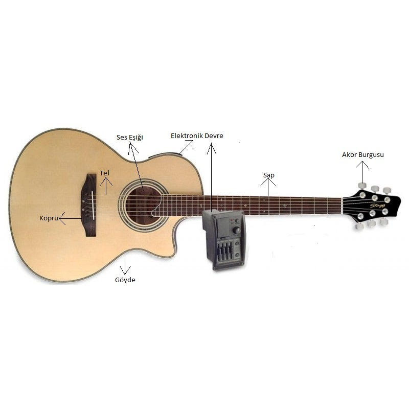
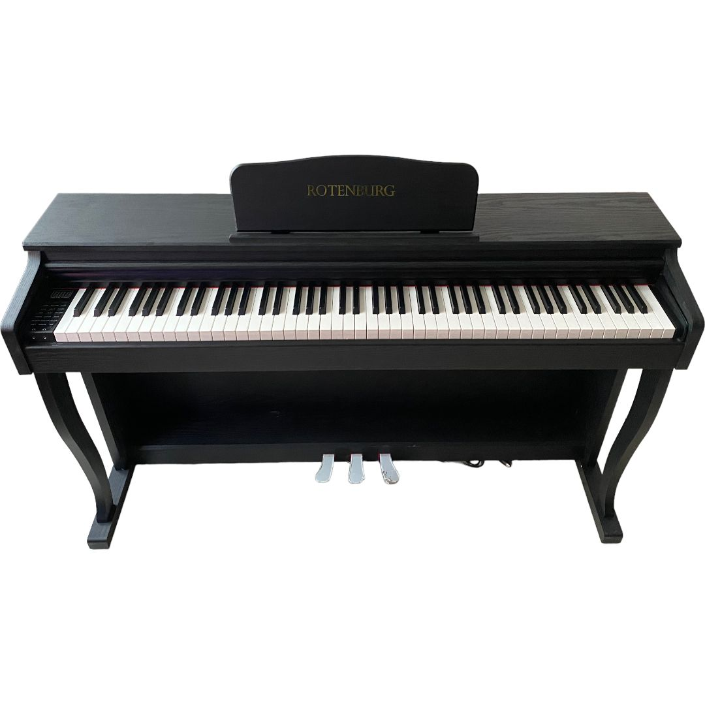

Müzik Aletleri

Gitar
Modern ve klasik müzikte en sık kullanılan telli çalgılardan biridir.

Piyano
Melodi, armoni ve ritmi bir araya getiren tuşlu bir çalgıdır.

Keman
Zarif sesiyle klasik müzikten halk ezgilerine kadar geniş bir kullanım alanı vardır.

Bateri
Ritmi yönlendiren vurmalı çalgı setidir.

Flüt
Nefesli bir çalgı olup orkestralarda zarif tınısıyla öne çıkar.